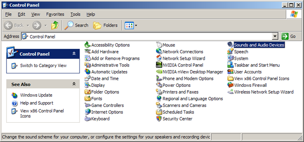
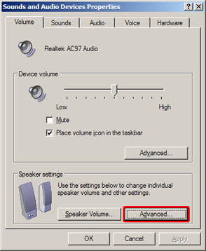
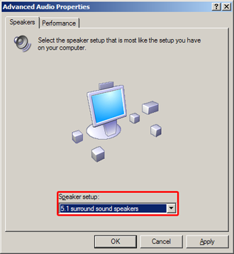
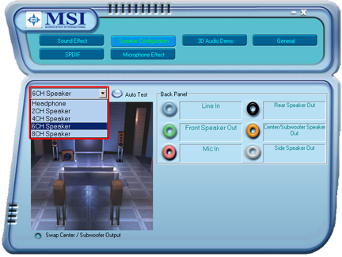
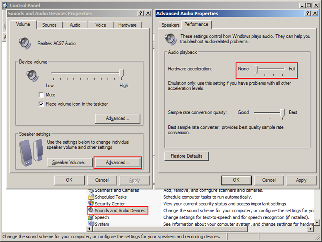

Sound configuration
openBVE can make use of stereo speakers, 5.1 sound systems, 7.1 surround systems, and so on. In order for sounds to be played correctly, you should make sure that the amount of speakers that are actually connected to your computer is properly set up. An improper configuration can lead to sounds being generated for speakers that do not exist. In-game, you might then be unable to hear sounds emerging from certain angles.
There are usually two places to look for this configuration. The first one is an overall operating system setting, while the second one is a setting specific to the sound card.
Operating system settings
Windows-specific
On Windows XP, open Control Panel (e.g. Start Menu > Settings > Control Panel), and then follow these directions:
|  | |
|  |  |
Here, set the amount of speakers that are actually connected to your computer.
Sound card setting (example)
If your sound card provides its own configuration dialog, open it and try to find a setting for speaker configuration, for example:

Again, set the amount of speakers that are actually connected to your computer.
Test the sound configuration
In order to test whether your sound configuration is correct, try these things: In-cab, deactivate camera restriction (by default CTRL+R), then pan the camera around by 360 degrees (by default LEFT or RIGHT arrow keys). Switch to an exterior view and pan the camera around by 360 degrees there, too.
If you notice a silence at particular angles, your computer is likely configured to use more speakers than are actually connected.
If you notice that some speakers do not emit any sound, or that two speakers output the same sound, your computer is likely configured to use less speakers than are actually connected.
In these cases, follow the above steps in order to set up the sound correctly.
Troubleshooting
Windows-specific
If you experience low quality sound, or abrupt starting or stopping of sounds, try disabling hardware audio acceleration via Control Panel:

On Windows XP, open Control Panel, select Sounds and Audio Devices, click Advanced... in the Speaker settings section, and then select the left-most position of the Hardware acceleration slider.